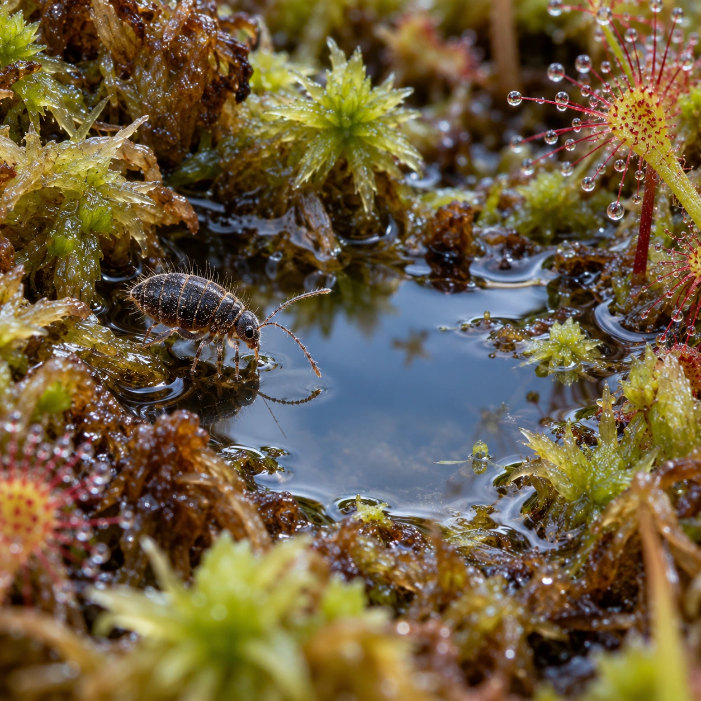
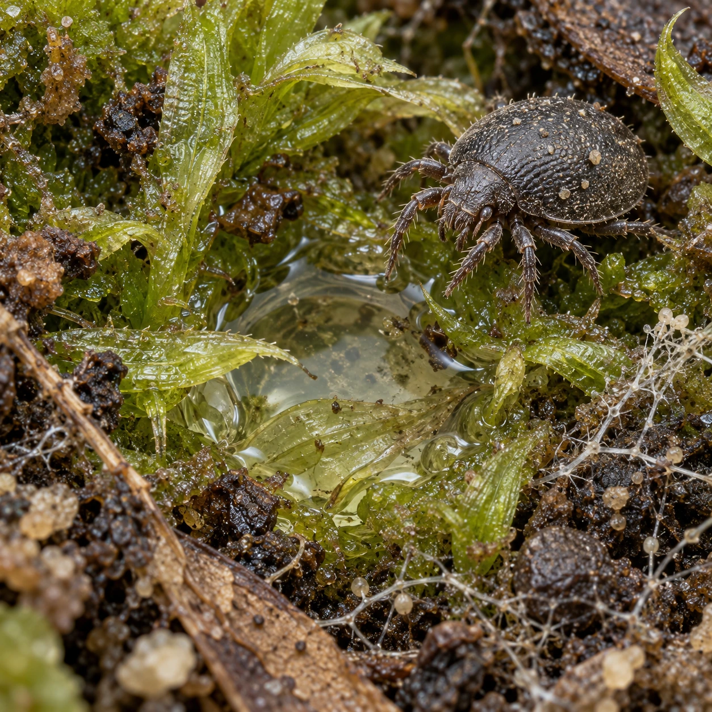
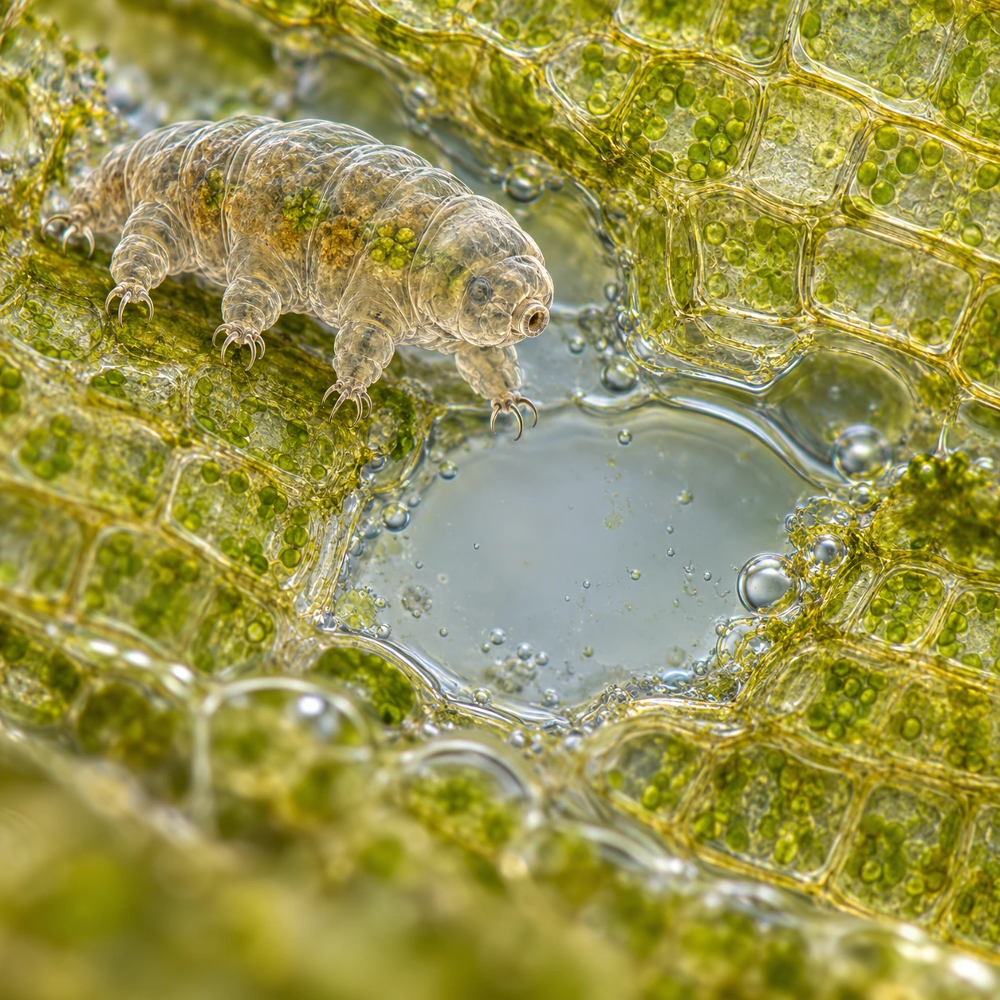
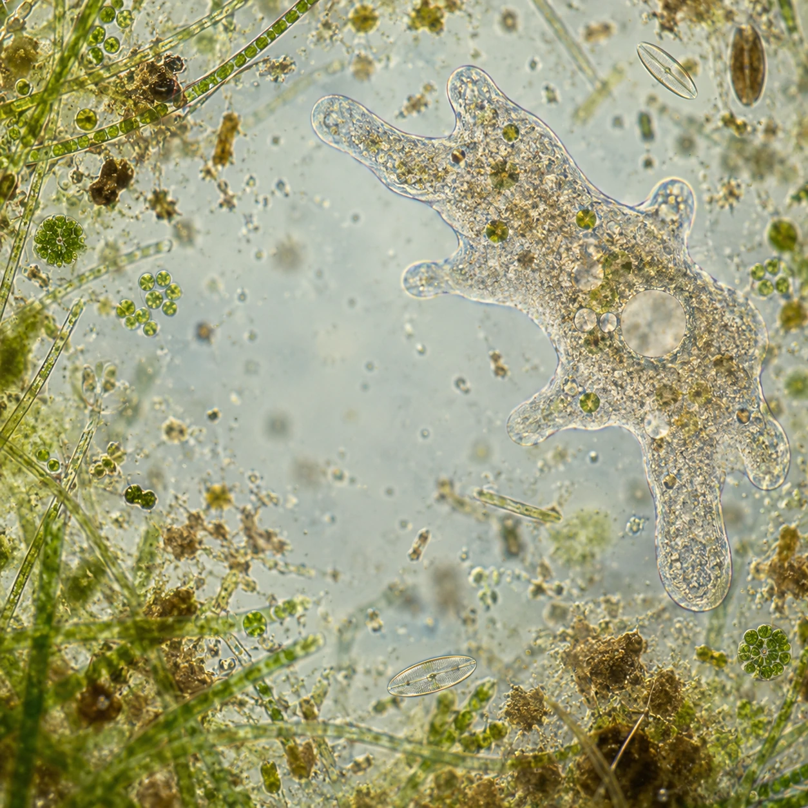
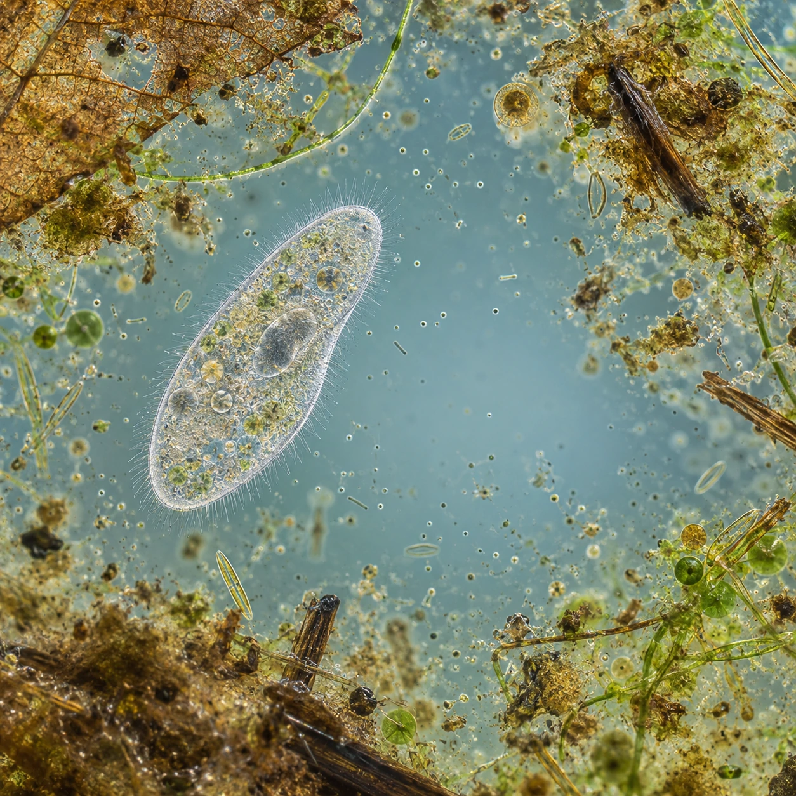
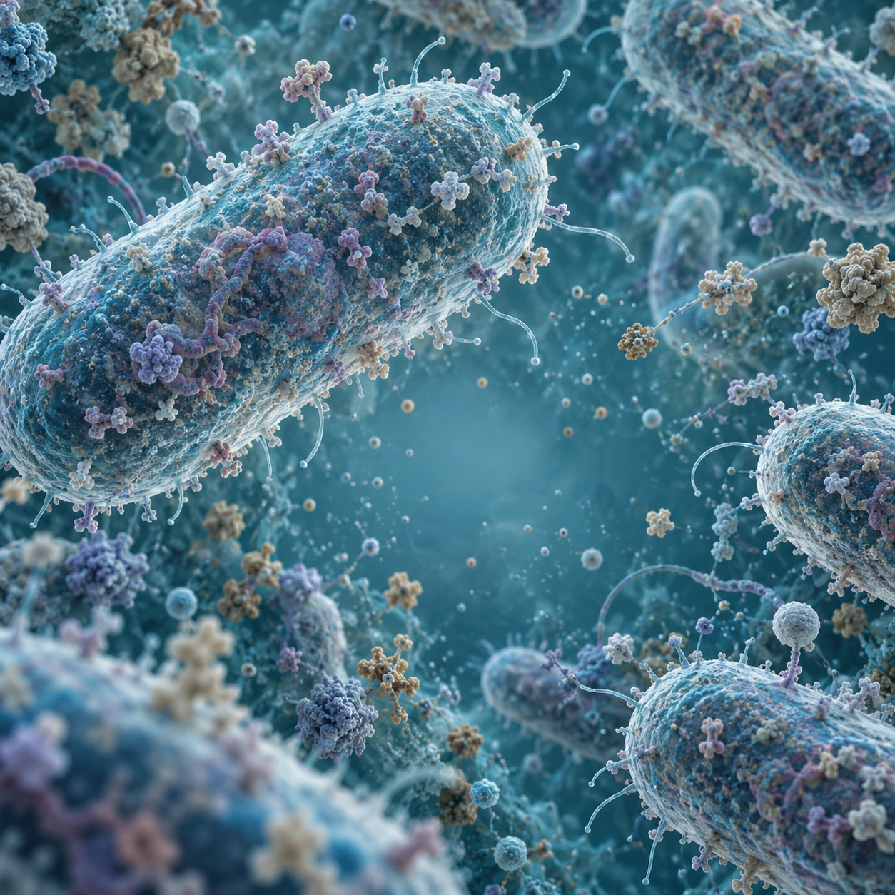
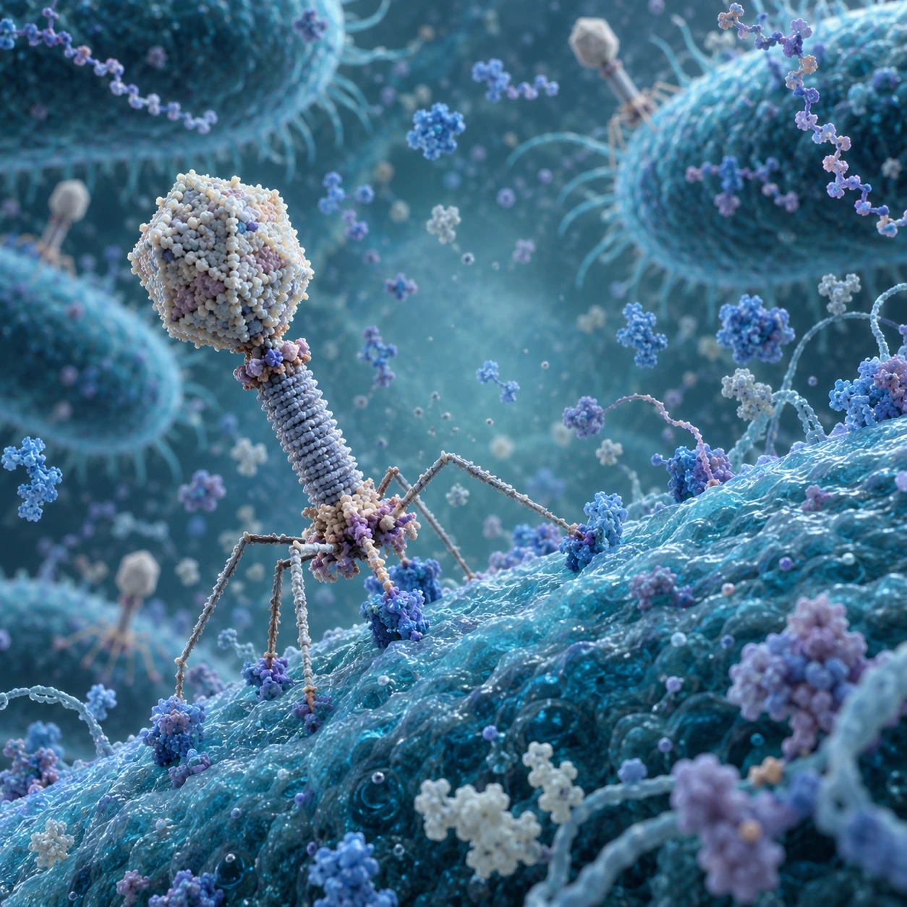
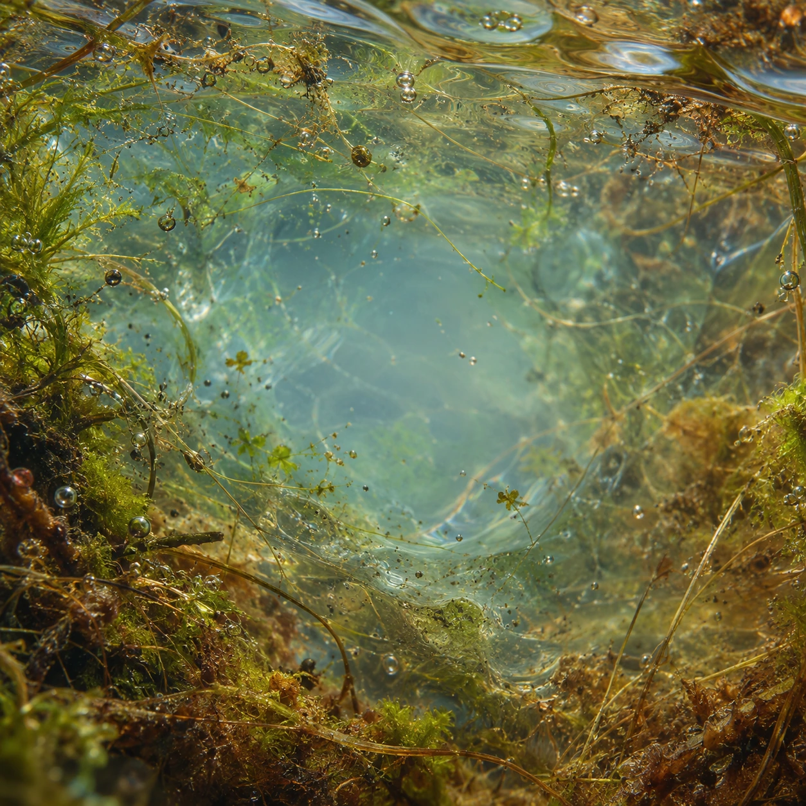

A continuous title zoom.
Zoom through the seven worlds, then through a water field that returns to the same bog scene. The opening plate is reused exactly at the end of the cycle.
Each scene contains the next scene as a softly composited central layer. A constant logarithmic zoom enlarges every nested layer together. At a handoff the outgoing layer is already outside the viewport; the incoming layer keeps the exact same position and scale. The repeated image list closes the full cycle without a cut or orientation reset.
Eight plates, fivefold magnification per step and ten seconds per step make an 80-second cycle. All plates load and decode before animation begins. Reduced-motion mode shows one composed frame.
The Phage plate uses the updated realistic microscopic false-light environment and a reasonably large depth of field. Its ordinary phage does not glow. The title sequence carries no super-gene effect.
















Built-in image_gen outputs; original PNGs retained. Runtime WebP exports preserve the generated dimensions. Exact prompts, checksums and delivery metadata: manifest.